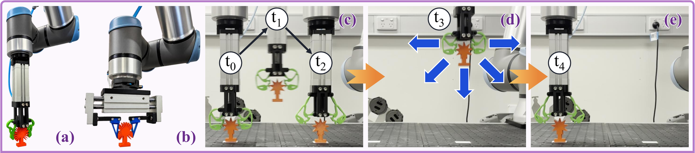

Abstract
Robotic grippers operating in unstructured environments must robustly grasp objects of different shapes and sizes despite perception and positioning errors. Soft grippers that can achieve this robustness through intelligent mechanical design rather than sophisticated control software offer a promising solution. However, no existing computational design framework explicitly optimises soft gripper morphology for robustness across object geometries and grasp poses. We introduce SimTO-Robust, a generalisation of simulation-driven topology optimisation (SimTO) that simulates grasps across multiple objects and poses and aggregates their contact forces to guide gripper morphology optimisation. We generate 6,646 designs and physically evaluate 24 of them alongside 10 specialised SimTO designs, two rigid baseline grippers, and a baseline generalist soft gripper produced using conventional topology optimisation. All 37 grippers are tested in a pick-and-place task involving five feature-rich objects and six grasp poses, with external disturbances of increasing magnitude applied during the task. On average, SimTO-Robust designs complete pick-and-place more reliably than specialised SimTO designs and the rigid baselines. The best SimTO-Robust designs also withstood more of the applied disturbances than any other tested gripper. These results show that incorporating diverse grasp conditions into simulation-driven topology optimisation is a simple and effective approach to improving real-world soft gripper robustness. More broadly, they show that robust robotic grasping can be achieved through intelligent mechanical design rather than sophisticated sensing and control.
Experimental Grasp Robustness Tests

We compare 24 SimTO-Robust designs against 10 specialised SimTO designs, two rigid grippers and a soft reference gripper in a pick-and-place task with external impulses applied throughout. (a): Soft grippers are mounted on a UR10e arm and actuated by a linear pneumatic actuator. (b): Our parallel-jaw rigid gripper. (c)–(e): In each trial, the object is first grasped at t0, transported during t1 and placed at t2. It is then re-grasped and lifted during t3 before undergoing four impulse-resistance tests of increasing magnitude: the first accelerates the gripper in each of the five directions shown in blue, and the remaining three shake it at increasing accelerations. If the object is still held, it is placed back on the target at t4. Each design is tested on five feature-rich objects in six grasp poses (30 trials per design).
Representative Examples
Below are five representative grasps, one per object. Each compares a different SimTO-Robust design against a SimTO design specialised to that object, alongside the same rigid and soft reference grippers. See the paper for full results.
Object: Star
Nominal pose (O) at which all SimTO designs were optimised: The SimTO design performs well here, as this is the single pose it was optimised for. The rigid and soft reference grippers survive the disturbances but the latter cannot keep the star upright and fails its final placement. With its long, adaptable contact surface, this SimTO-Robust design was our most robust overall.
Object: Curvy ball
Nominal pose +7 mm in z (Z1): At this pose, 7 mm above the nominal pose it was optimised for, the SimTO design fails to secure the curvy ball. The rigid gripper cannot adapt to the object and fails to place it on the white strip. The soft reference drops the object under the extreme disturbances, as it has a flat contact surface that fails to generate a large contact area and strong grip, while the SimTO-Robust design holds on throughout.
Object: Hourglass
Z1 pose offset by 8 mm in x (X1): The SimTO design never makes contact with the hourglass, as it was optimised at a lower grasp height (see the paper for how optimised grasp poses influence contact surface geometry). The rigid gripper's flat contact surface grips too forcefully and cannot conform to the object. The soft reference loses stability under the extreme disturbances, while SimTO-Robust's long, compliant grooved contact surface keeps the hourglass steady throughout.
Object: Gear
Z1 pose offset by 4 mm in y (Y1): This was the most challenging pose for all designs. As every gripper is 10 mm thick along y, a 4 mm offset in y is substantial. The rigid and soft references both fail the initial pick-and-place. The SimTO-Robust design wraps around the gear, and the specialised SimTO design also performs well at this unseen pose.
Object: Spiky ball
Z1 pose rotated by 8° about z (θ1): With its short contact surface, the SimTO design fails the pick-and-place. As both the rigid and soft reference designs have flat contact surfaces, the soft reference fails to conform to the spikes of the object, while the rigid gripper crushes them, which could damage a delicate object (e.g., coral, fruit, vegetables). The SimTO-Robust design wedges into the spikes to grasp the object firmly without damaging it.
Gallery


BibTeX
@misc{enkera2026simtorobust,
title = {SimTO-Robust: Automated Design of Soft Grippers Robust to Grasp Pose and Object Geometry},
author = {Enkera, Kurt and Pinskier, Josh and Gallagher, Marcus and Howard, David},
year = {2026},
eprint = {2610.39560},
archivePrefix = {arXiv},
primaryClass = {cs.RO}
}